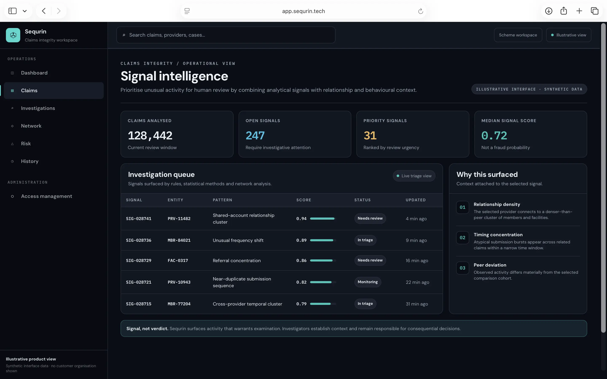
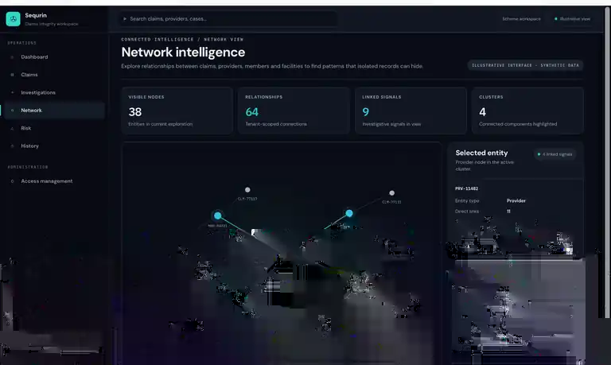
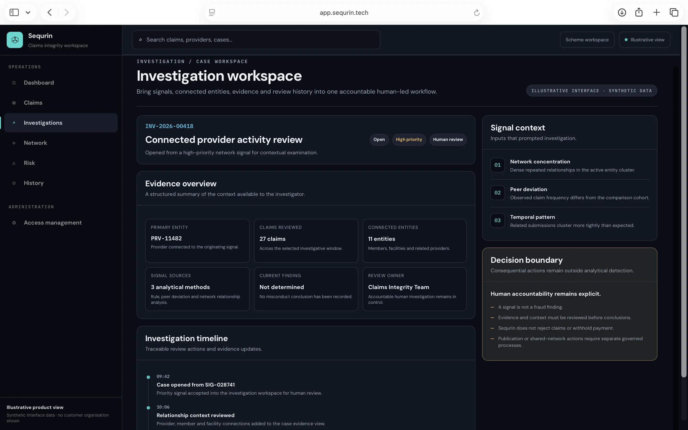

Signals stay investigative
Analytical output can prioritise attention. It does not establish fraud or make a claims decision.
Product
Sequrin brings signal detection, relationship intelligence and structured investigation into one governed workspace for medical schemes and authorised claims-integrity teams. It helps teams decide what deserves attention without turning analytical output into an automated claims decision.
01 · Signal detection
Rules, statistical methods and analytical models can surface unusual activity into a prioritised review queue. Signals help scarce investigative attention move toward patterns that warrant closer examination.
A signal is an investigative lead. It does not establish misconduct or change the payment status of a claim.


02 · Network intelligence
Sequrin can connect claims, providers, members, facilities, timing and other relevant relationships into investigative context. Investigators can move beyond a single record and examine the structure around it.
A relationship is context, not proof of misconduct. Network structure helps investigators ask better questions.
03 · Investigation workspace
Authorised investigators can bring signals, connected entities, evidence and review history into a structured case workspace. The investigation becomes a coherent process rather than a collection of disconnected analytical outputs and notes.
Investigators establish context and remain responsible for findings and consequential decisions.

04 · Governance and access
Claims-integrity tooling handles sensitive information and can influence where investigators focus. Sequrin is designed so analytical capability sits inside explicit access, organisational and decision boundaries.
Analytical output can prioritise attention. It does not establish fraud or make a claims decision.
Roles, permissions and organisational boundaries determine who can enter sensitive claims-integrity workflows.
Important investigative and administrative activity can remain traceable rather than disappearing into an informal process.
Sequrin does not reject claims, withhold payment or impose sanctions from a detection result.
A detection result cannot itself reject, delay or withhold a claim, impose a sanction, or publish a shared-network notice. Those boundaries are deliberate parts of how Sequrin is designed to operate.
Explore Sequrin governance →One operating flow
01
Bring relevant claims and integrity data into a governed analytical context.
02
Surface unusual activity through rules, statistical methods and network analysis.
03
Bring signals, relationships, evidence and review history into one structured workspace.
04
Keep consequential conclusions and claims decisions with accountable human processes.
For medical schemes
See how Sequrin can fit into a medical scheme's claims-integrity operation, from analytical attention through human-led investigation and governed administration.